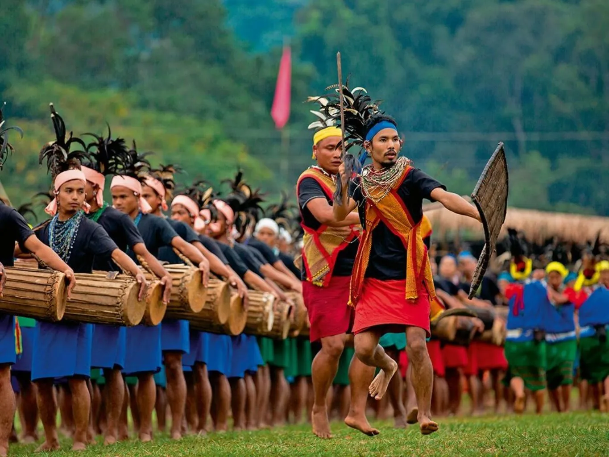

Welcome to Meghalaya!

Meghalaya, located in northeastern India, is renowned for its lush landscapes, diverse culture, and vibrant
traditions. The culture of Meghalaya is a rich tapestry woven from the customs and practices of its three major
tribes: the Khasi, the Garo, and the Jaintia. Each tribe has its own unique traditions, festivals, and languages,
contributing to the state's cultural diversity.
Festivals are central to Meghalaya's cultural life. The Khasi tribe celebrates Shad Suk Mynsiem, a spring festival
marked by traditional dance and music that symbolizes peace and well-being. The Garo tribe's Wangala Festival,
also known as the 100 Drums Festival, celebrates the harvest and involves rhythmic drumming and dancing. The
Jaintia tribe celebrates Behdienkhlam, a festival aimed at driving away evil spirits and ensuring a good harvest,
featuring vibrant rituals and dances.
Meghalaya's cuisine reflects its agrarian lifestyle and the use of locally sourced ingredients. Dishes like Jadoh
(rice cooked with meat), Nakham Bitchi (a spicy fish soup), and Pumaloi (steamed rice cake) are staples. These
dishes highlight the state's culinary diversity and the importance of rice and meat in the local diet. The Khasi,
Garo, and Jaintia tribes each have their own unique culinary traditions that contribute to Meghalaya's rich
gastronomic heritage.
Music and dance are integral to Meghalaya's cultural expression. Folk dances such as Nongkrem Dance and Lahoo
Dance are performed during festivals and social gatherings, showcasing intricate footwork and traditional attire.
The state is also known for its rich tradition of folk music, with instruments like the duitara (a four-stringed
instrument) and the duitara (a percussion instrument) being commonly used.
Meghalaya's natural beauty, with its rolling hills, dense forests, and picturesque waterfalls like Nohkalikai and
Seven Sisters, provides a stunning backdrop for cultural activities and eco-tourism. The state is also home to
living root bridges, a unique example of bioengineering by the Khasi people, and the Mawsmai Caves, which attract
tourists and adventurers alike.
Handicrafts such as bamboo and cane products, hand-woven textiles, and traditional jewelry reflect the artistic
skills and cultural heritage of Meghalaya's tribes. These crafts are not only functional but also serve as
cultural symbols, often used in traditional ceremonies and rituals.